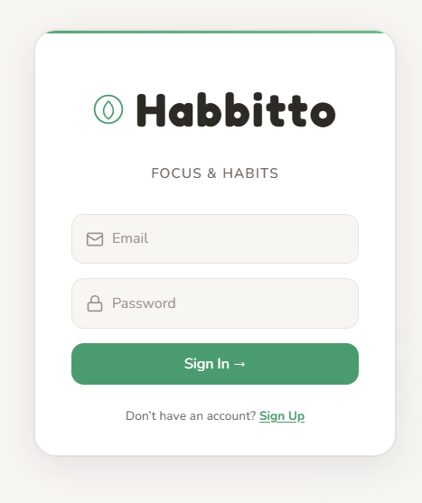
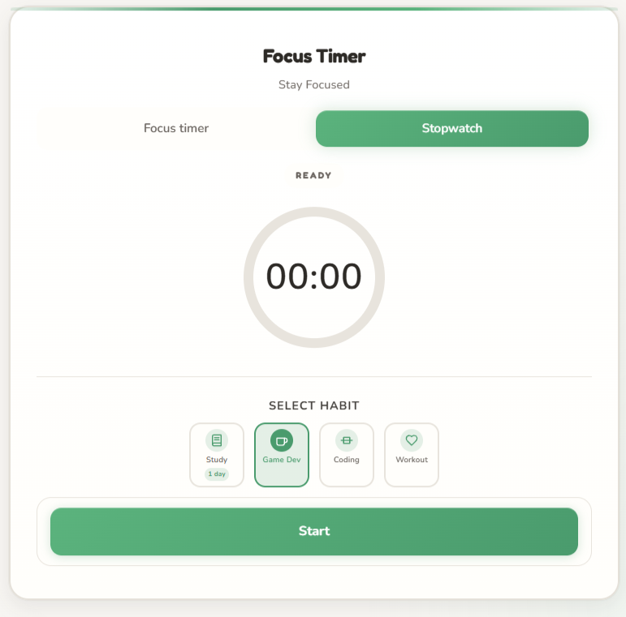
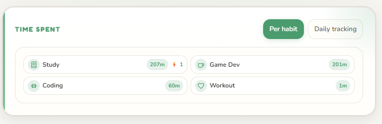

Project Overview
Habbitto is a habit tracker with a built-in focus timer and stopwatch. Instead of only checking "done," you track how long you spent on each habit. A focus timer (30–90 min or custom) and a stopwatch both log time to the habit you choose. Habits can be marked done for the day, and the app shows streaks and total time spent so progress is visible and motivating.
Type
Web App
Platform
Browser, Desktop (download)
Stack
Vanilla JS, Vite, Supabase, CSS
Team
Solo Developer

Features
Auth
Email/password sign up and login via Supabase.

Habit Tracker
Custom habits, icon picker, edit/delete, mark done for the day.
Focus Timer
Preset durations (30, 45, 60, 75, 90 min), custom duration, circular progress, optional break phase.

Stopwatch
Free-form timing with save to habit.

Time & Streaks
Time spent per habit, daily completions, consecutive-day streak counter.


Session-end Flow
Congratulatory dialog and optional sound when the focus timer finishes.
Guide & Shortcuts
In-app "How it works" with simple steps and icons. Space to start/pause/resume; keys 1–5 for duration presets when idle. Offline / local mode works without Supabase using localStorage.
Tech Stack
Frontend
- Vanilla JavaScript (ES modules)
- Vite
- CSS (custom properties)
Backend & Storage
- Supabase (Auth)
- PostgreSQL with RLS
- localStorage (offline mode)
Design & UX
Dark and light theme support with clear typography and accent color. Circular progress ring for the timer with a subtle pulse when running. Full-width Start button, habit picker with streak badges, empty state ("Create your first habit"). Modals for account, guide, and session-end; tab title shows remaining time when the timer is running.
Challenges & Learnings
- Supabase RLS — Policies so users only see and edit their own habits, completions, and sessions
- Timer state — Keeping phase (idle / work / break / stopwatch), intervals, and UI in sync; handling tab visibility for re-renders
- Sound and dialog — Looping completion sound until the user dismisses the session-end dialog, then cleaning up audio and state